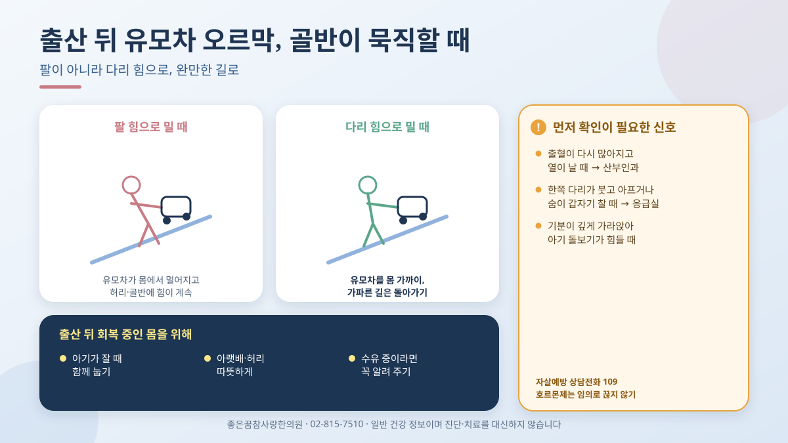

이종호 한의사 감수좋은꿈참사랑한의원 대표원장 (한의사 면허번호 19769)발행 2026-11-24 · 수정 2026-11-26
이 글의 차례
- 왜 이런 불편이 생길 수 있나요
- 왜 오르막에서 유독 골반 아래가 묵직해질까요
- 비슷해 보여도 살필 점이 조금씩 다릅니다
- 출산 뒤 시기에 따라 살피는 점이 달라집니다
- 끼니와 잠을 조금이라도 챙기는 방법
- 먼저 이렇게 여쭙니다
- 제왕절개를 하셨다면 이런 점도 봅니다
- 산책 시간대는 이렇게 골라 보세요
- 상황별 예시
- 스스로 점검해 보세요
- 유모차를 밀 때 자세는 어떻게 바꾸면 좋을까요
- 외출 동선은 이렇게 짜 보세요
- 가족이 함께 도와줄 수 있는 것
- 일상에서 먼저 해 볼 수 있는 것
- 집에서 해 볼 수 있는 몸 돌보기
- 한의원에서 함께 살필 수 있는 경우
- 얼마나 지켜보고 언제 상담할까요
- 이렇게 기록해 오시면 상담이 쉬워집니다
- 이런 증상은 먼저 확인이 필요합니다
출산 뒤 유모차를 밀고 언덕길을 오른 날 골반 아래가 묵직하고 쉽게 지친다면, 가파른 길을 피하고 팔이 아니라 다리 힘으로 미는 방법부터 바꿔 보시길 권합니다. 출산 후 몇 달이 지나도 몸은 아직 회복 중일 수 있고, 밤중 수유로 잠까지 부족하면 같은 길도 훨씬 힘들게 느껴집니다.
아기와 바깥바람을 쐬는 시간은 엄마에게도 숨 돌릴 틈이 됩니다. 그 시간을 포기하라는 말씀을 드리려는 것이 아닙니다. 길과 시간, 미는 자세를 조금 바꿔서 산책이 몸에 부담으로 남지 않게 하는 방법을 함께 찾아보려 합니다.
왜 이런 불편이 생길 수 있나요
- 임신과 출산을 거치며 골반 주변 인대와 근육, 골반저근이 회복하는 데 시간이 걸릴 수 있습니다.
- 유모차를 밀며 오르막을 오르면 허리와 골반에 힘이 계속 들어갑니다.
- 밤중 수유와 짧은 잠이 이어지면 피로가 쉽게 쌓입니다.
- 아기를 안고 수유하는 자세가 허리와 손목, 어깨에도 부담을 더합니다.
왜 오르막에서 유독 골반 아래가 묵직해질까요
유모차에 아기와 기저귀 가방, 장 본 물건까지 실으면 생각보다 무게가 꽤 됩니다. 이 무게를 오르막에서 밀어 올리려면 몸을 앞으로 숙이고 배와 엉덩이에 힘을 주게 되는데, 이때 아랫배와 골반 바닥이 함께 버팁니다.
임신 기간 동안 늘어났던 배 근육과 골반 바닥 근육은 출산 뒤 제 탄력을 찾는 데 시간이 걸리는 분이 많습니다. 그 사이에 오르막을 자주 오르면 버티는 힘보다 부담이 앞서 묵직함이 남기 쉽습니다.
여기에 잠이 부족하면 근육이 회복할 시간도 함께 줄어듭니다. 같은 언덕을 같은 시간에 올라도 밤에 자주 깬 다음 날 더 힘든 것은 의지가 약해서가 아니라 몸이 쉴 틈이 모자라서인 경우가 많습니다.
비슷해 보여도 살필 점이 조금씩 다릅니다
- 골반 아래가 처지듯 묵직하고 오래 서 있으면 심해지는 경우에는 골반 바닥의 회복 정도와 서 있는 시간을 함께 봅니다.
- 엉덩이 한쪽이나 골반 뒤쪽이 콕 찌르듯 아프고 돌아누울 때 불편하다면 골반 관절 주변의 움직임을 살핍니다.
- 허리 가운데가 뻐근하고 아기를 들어 올릴 때 심해진다면 들어 올리는 동작과 허리 쓰는 습관을 함께 봅니다.
- 엄지 쪽 손목이 시큰하고 유모차 손잡이를 쥘 때 아프다면 손목 쓰는 법을 따로 살핍니다.
- 특별히 아픈 곳은 없는데 온몸이 무겁고 계단 몇 칸에도 금세 지친다면 잠과 식사, 기력의 흐름을 더 자세히 여쭙습니다.
여러 가지가 섞여 있는 분도 많습니다. 어디가 어떻게 불편한지 손으로 짚어 보여 주시면 진찰이 한결 수월해집니다.
출산 뒤 시기에 따라 살피는 점이 달라집니다
출산 뒤 첫 두세 달은 몸이 회복하는 데 집중하는 시기라, 오르막 산책은 짧게 하고 평지를 위주로 다니시길 권합니다. 이 시기에는 산부인과에서 들은 안내를 기준으로 움직이는 양을 정하시면 됩니다.
백일 무렵부터 반년 사이에는 외출이 늘고 아기 몸무게도 빠르게 늘어납니다. 유모차와 아기띠를 번갈아 쓰며 몸 한쪽에만 부담이 쌓이지 않게 하는 것이 도움이 됩니다.
아기가 앉고 기기 시작하면 바닥에서 들어 올리는 일이 하루에도 수십 번 생깁니다. 이때 허리부터 숙여 들어 올리는 습관이 굳으면 골반과 허리의 묵직함이 길게 이어지기 쉬워, 무릎을 굽히는 동작을 미리 몸에 익혀 두시면 좋습니다.
끼니와 잠을 조금이라도 챙기는 방법
아기를 돌보다 보면 엄마 끼니는 서서 빵 한 조각으로 때우는 날이 많습니다. 손이 덜 가는 주먹밥, 삶은 달걀, 두부, 바나나처럼 한 손으로 먹을 수 있는 것을 미리 준비해 두면 기운이 바닥나는 시간을 줄일 수 있습니다.
수유 중이라면 물을 자주 찾게 되니 수유하는 자리 옆에 물병을 두세요. 따뜻한 국이나 차를 곁들이면 몸이 덜 차고 속도 편한 분이 많습니다.
잠은 길게 한 번에 자기 어려운 시기입니다. 낮에 아기가 잠든 30분이라도 휴대폰을 내려놓고 눈을 감는 시간을 모으면 오후의 묵직함이 조금 덜해지는 분이 많습니다.
먼저 이렇게 여쭙니다
- 출산하신 지 얼마나 되었나요? 자연분만인가요, 제왕절개인가요?
- 유모차를 밀고 오르막을 오를 때 어느 부위가 가장 불편한가요?
- 밤에 아기 때문에 몇 번 정도 깨시나요?
- 소변이 새거나 아랫배가 처지는 느낌이 있나요?
- 모유 수유 중이신가요?
- 출산 전에도 허리나 골반이 불편한 적이 있었나요?
- 집안일과 아기 돌보기를 함께 나눌 사람이 있나요?
제왕절개를 하셨다면 이런 점도 봅니다
제왕절개 뒤에는 배에 힘을 주는 동작이 한동안 조심스러워, 유모차를 밀 때 배 대신 허리와 팔로 버티는 분이 많습니다. 그러다 보면 허리 가운데와 어깨가 먼저 뻐근해지기도 합니다.
수술 부위가 당기는 느낌이 있다면 오르막에서 몸을 크게 숙이지 말고, 걸음을 더 짧게 하며 천천히 오르세요. 진료 때는 수술 시기와 회복 과정에서 들은 이야기를 먼저 여쭙고, 몸을 살피는 범위와 세기도 그에 맞춥니다.
산책 시간대는 이렇게 골라 보세요
겨울에는 해가 오른 늦은 오전이나 이른 오후가 몸이 덜 굳어 걷기 편합니다. 찬바람이 부는 날 아침 일찍 오르막을 오르면 허리와 골반이 더 뻣뻣하게 느껴지는 분이 많습니다.
아기가 막 먹고 기분이 좋은 시간에 나가면 중간에 보채서 서둘러 돌아오는 일이 줄어듭니다. 서두르는 걸음이 줄면 몸에 들어가는 힘도 함께 줄어듭니다.
상황별 예시
- 예를 들어 아기 예방접종이나 장보기 때문에 하루에 두 번 이상 같은 오르막을 오르내리는 경우, 오후로 갈수록 골반 아래가 처지는 느낌이 커질 수 있습니다. 볼일을 하루에 몰지 않고 나누거나, 완만한 길로 돌아가는 동선을 먼저 정해 보시길 권합니다.
- 예를 들어 제왕절개 뒤 몇 달이 지나 산책을 늘리기 시작한 경우, 배에 힘을 주는 순간 아랫배가 당기거나 허리로 힘이 몰리기 쉽습니다. 처음 몇 주는 평지 위주로 짧게 다니고 오르막은 한 구간씩만 넣어 보세요.
- 예를 들어 아기띠로 안고 걷다가 유모차로 바꾼 경우, 어깨 부담은 줄었는데 손목과 허리가 새로 불편해지기도 합니다. 손잡이 높이를 배꼽 근처로 맞추고, 손목을 꺾지 않고 손바닥 전체로 미는지 확인해 보세요.
- 예를 들어 둘째를 낳고 첫째 어린이집 등원까지 유모차로 함께 다니는 경우, 큰아이 손을 잡고 한 손으로 유모차를 미느라 몸이 한쪽으로 비틀리기 쉽습니다. 오르막 구간만이라도 두 손으로 밀 수 있게 큰아이가 유모차 옆 손잡이를 잡도록 약속해 보세요.
- 예를 들어 복직을 앞두고 체력을 키우려 오르막 산책 시간을 갑자기 두 배로 늘린 경우, 며칠 뒤 골반 아래 묵직함과 허리 뻐근함이 함께 올라오기도 합니다. 걷는 시간은 일주일에 10분 정도씩 천천히 늘려 보세요.
스스로 점검해 보세요
- 오르막에서 유모차를 밀 때 팔을 쭉 펴고 몸을 많이 숙인다
- 산책 뒤 누워야 할 만큼 골반 아래가 묵직하다
- 밤에 세 번 이상 깨는 날이 일주일에 여러 번이다
- 아기를 바닥에서 들어 올릴 때 허리부터 숙인다
- 수유할 때 등을 받치지 않고 앞으로 굽힌 채 오래 앉아 있다
- 끼니를 거르거나 서서 대충 먹는 날이 많다
해당하는 항목이 많다면 길과 자세, 쉬는 시간부터 하나씩 바꿔 볼 신호입니다.
유모차를 밀 때 자세는 어떻게 바꾸면 좋을까요
손잡이는 배꼽에서 명치 사이 높이에 오도록 맞춰 보세요. 손잡이가 너무 낮으면 허리를 숙이게 되고, 너무 높으면 어깨가 들려 목과 어깨까지 뻐근해집니다.
오르막에서는 보폭을 평소보다 짧게 하고, 유모차를 몸에서 멀리 밀어내지 말고 가슴 가까이 둔 채 걸음으로 밀고 올라가세요. 팔꿈치는 살짝 굽혀 두면 손목과 어깨에 걸리는 힘이 줄어듭니다.
내리막에서는 유모차가 앞으로 쏠리지 않게 손잡이를 꽉 쥐게 되는데, 이때 허리를 뒤로 젖히며 버티는 분이 많습니다. 무릎을 살짝 굽히고 천천히 내려오면 허리와 골반에 걸리는 부담이 덜합니다.
기저귀 가방과 장 본 물건은 손잡이에 걸기보다 아래 바구니에 넣어 주세요. 손잡이에 무게가 걸리면 유모차가 뒤로 쏠려 오르막에서 더 세게 밀어야 합니다.
외출 동선은 이렇게 짜 보세요
집에서 자주 가는 곳까지 오르막이 없는 길, 오르막이 짧은 길을 한 번 지도 앱으로 찾아 두세요. 몇 분 더 걸리더라도 경사가 완만한 길이 몸에는 덜 힘든 경우가 많습니다.
볼일이 여러 개라면 하루에 몰지 말고 이틀에 나눠 보세요. 한 번 외출할 때 걷는 시간이 30분을 넘기면 중간에 벤치나 카페처럼 앉아 쉴 곳을 미리 정해 두는 것도 도움이 됩니다.
장보기처럼 무거운 짐이 생기는 일은 배달이나 가족의 퇴근길에 맡기고, 아기와의 산책은 가벼운 몸으로 다니는 시간으로 남겨 두시길 권합니다.
가족이 함께 도와줄 수 있는 것
밤중 수유를 모두 엄마가 맡으면 잠이 끊기는 날이 계속됩니다. 분유나 유축한 젖을 쓰는 집이라면 하루 한 번은 다른 가족이 맡아 엄마가 네다섯 시간 이어서 잘 수 있게 해 보세요.
주말 산책은 오르막 구간만이라도 다른 가족이 유모차를 밀어 주면 좋습니다. 무거운 아기 욕조를 옮기거나 바닥에서 아기를 들어 올리는 일도 나눠 맡을 수 있습니다.
'다들 이렇게 키운다'는 말에 혼자 참기보다, 어떤 일이 가장 힘든지 가족과 구체적으로 나눠 보세요. 진료 때 가족이 함께 오시면 집에서 도울 수 있는 일을 같이 정리해 드립니다.
일상에서 먼저 해 볼 수 있는 것
- 오르막에서는 유모차를 몸 가까이 두고 팔이 아니라 다리 힘으로 밀기
- 가파른 길은 돌아가더라도 완만한 길로 다니기
- 아기가 잘 때 집안일보다 함께 눕는 시간 만들기
- 아랫배와 허리를 따뜻하게 하고 쉬기
- 아기를 들어 올릴 때는 무릎을 굽혀 몸 가까이에서 안기
집에서 해 볼 수 있는 몸 돌보기
누운 채 무릎을 세우고 숨을 천천히 내쉬면서 아랫배와 골반 바닥을 살짝 끌어올렸다가, 들이쉬며 힘을 푸는 동작을 몇 번 해 보세요. 힘을 세게 주기보다 부드럽게 조였다 푸는 감각을 익히는 것이 먼저입니다.
수유할 때는 등 뒤와 팔 아래에 쿠션을 받쳐 아기를 엄마 쪽으로 올리고, 엄마가 아기 쪽으로 몸을 숙이지 않게 해 보세요. 하루에 여러 번 하는 동작이라 작은 차이가 쌓입니다.
산책에서 돌아오면 바로 집안일을 시작하기보다 10분이라도 옆으로 누워 다리 사이에 베개를 끼우고 쉬어 보세요. 산부인과에서 운동을 시작해도 되는 시기를 따로 들으셨다면 그 안내를 먼저 따르시면 됩니다.
한의원에서 함께 살필 수 있는 경우
- 출산 후 골반과 허리가 계속 불편한 경우 몸의 회복 상태와 생활 동작을 함께 살핍니다.
- 잠이 부족하고 쉽게 지치는 경우 기력과 식사, 잠의 흐름을 함께 살핍니다.
- 모유 수유 중이라면 꼭 알려 주세요. 진료 방법을 정할 때 함께 고려합니다.
좋은꿈참사랑한의원에서는 모든 분께 맥부터 짚으며 출산 시기와 방법, 수유 여부, 하루 일과를 여쭙고, 필요하면 설진으로 기력과 몸 상태를 함께 살핍니다. 그 뒤 침·추나·한약 상담 등을 정하며, 수유 중이라면 진료 방법과 한약 처방 여부를 그에 맞춰 신중하게 판단합니다.
첫 방문 때는 서 있는 모습과 걷는 모습, 누웠다 일어나는 동작을 보며 골반과 허리가 어떻게 움직이는지 살핍니다. 추나를 고려할 때는 출산 시기와 분만 방법을 듣고 기법과 세기를 고르며, 받는 중 불편하면 바로 말씀해 주시면 세기를 줄입니다. 드시는 약이나 영양제가 있다면 한약 상담 전에 함께 알려 주세요.
다시 오시면 지난번 이후 산책한 날과 길, 묵직함이 언제 덜했는지부터 이어서 여쭙습니다. 잠이 조금이라도 늘었는지, 수유 자세를 바꿔 보셨는지도 함께 들으며 다음에 덜어 낼 일을 하나씩 정합니다.
얼마나 지켜보고 언제 상담할까요
- 길과 미는 자세, 쉬는 시간을 바꾼 뒤 2~3주 정도 산책한 날과 묵직함의 정도를 적으며 지켜보세요.
- 바꿔 본 뒤에도 산책할 때마다 골반 아래가 처지는 느낌이 이어지거나, 아기를 안는 일상 동작까지 힘들어진다면 상담을 권합니다.
- 소변이 새는 느낌이 몇 달째 이어진다면 산부인과 검진 때도 함께 말씀해 보세요.
- 묵직함이 가벼워진 뒤에도 오르막 산책은 한 번에 늘리지 말고, 한 주에 한 구간씩 더해 가며 몸의 반응을 보세요.
- 잠이 조금씩 늘고 끼니를 챙기게 된 시기에 묵직함이 함께 덜해지는지도 기록에서 눈여겨보시면 좋습니다.
이렇게 기록해 오시면 상담이 쉬워집니다
- 출산 날짜와 분만 방법
- 수유 여부와 하루 수유 횟수
- 불편한 동작과 시간대
- 산부인과 검진에서 들은 내용
- 자주 다니는 길(오르막 구간이 있는지)과 한 번 외출할 때 걷는 시간
- 밤에 깬 횟수와 낮에 누워 쉰 시간
- 유모차 손잡이 높이를 바꿔 본 뒤 달라진 점
이런 증상은 먼저 확인이 필요합니다
- 출혈이 다시 많아지거나 덩어리가 나오거나, 열이 나는 경우
- 한쪽 다리가 붓거나 아픈 경우, 또는 갑자기 숨이 찬 경우
이런 신호가 있으면 한의원보다 가까운 병원이나 응급실을 먼저 찾으세요.

여쭙는 것
- 출산하신 지 얼마나 되었나요? 자연분만인가요, 제왕절개인가요?
- 유모차를 밀고 오르막을 오를 때 어느 부위가 가장 불편한가요?
- 밤에 아기 때문에 몇 번 정도 깨시나요?
생활에서 해 볼 것
- 오르막에서는 유모차를 몸 가까이 두고 팔이 아니라 다리 힘으로 밀기
- 가파른 길은 돌아가더라도 완만한 길로 다니기
- 아기가 잘 때 집안일보다 함께 눕는 시간 만들기
한의원에서 함께 살필 것
- 출산 후 골반과 허리가 계속 불편한 경우 몸의 회복 상태와 생활 동작을 함께 살핍니다.
- 잠이 부족하고 쉽게 지치는 경우 기력과 식사, 잠의 흐름을 함께 살핍니다.
- 모유 수유 중이라면 꼭 알려 주세요. 진료 방법을 정할 때 함께 고려합니다.
먼저 확인이 필요한 신호
- 출혈이 다시 많아지거나 덩어리가 나오거나, 열이 나는 경우
- 한쪽 다리가 붓거나 아픈 경우, 또는 갑자기 숨이 찬 경우
한눈에 보는 표
| 구분 | 핵심 |
|---|---|
| 여쭙는 것 | 출산하신 지 얼마나 되었나요? 자연분만인가요, 제왕절개인가요? 유모차를 밀고 오르막을 오를 때 어느 부위가 가장 불편한가요? |
| 생활에서 해 볼 것 | 오르막에서는 유모차를 몸 가까이 두고 팔이 아니라 다리 힘으로 밀기 가파른 길은 돌아가더라도 완만한 길로 다니기 |
| 한의원에서 함께 살필 것 | 출산 후 골반과 허리가 계속 불편한 경우 몸의 회복 상태와 생활 동작을 함께 살핍니다. 잠이 부족하고 쉽게 지치는 경우 기력과 식사, 잠의 흐름을 함께 살핍니다. |
| 먼저 확인이 필요한 신호 | 출혈이 다시 많아지거나 덩어리가 나오거나, 열이 나는 경우 한쪽 다리가 붓거나 아픈 경우, 또는 갑자기 숨이 찬 경우 |
자주 묻는 질문
모유 수유 중인데 한약을 먹어도 되나요?
수유 중인지, 아기가 몇 개월인지 알려 주시면 진찰 후 함께 판단합니다.
산후 조리 시기가 지났는데 늦은 건 아닌가요?
시기에 상관없이 지금 불편한 점을 이야기해 주시면 지금 상태에 맞춰 함께 살핍니다.
아기를 데리고 진료받아도 되나요?
방문 전 전화(02-815-7510)로 여쭤보시면 아기와 함께 오실 때의 진료 순서를 안내해 드립니다.
소변이 새는 느낌도 이야기해도 되나요?
네. 출산 뒤 흔히 겪을 수 있는 일이라 편하게 말씀해 주세요.
산책을 아예 쉬어야 하나요?
꼭 그렇지는 않습니다. 완만한 길로 짧게 다니며 묵직함이 어떻게 달라지는지 지켜보고, 기록을 보며 걷는 양을 함께 맞춰 봅니다.
좋은꿈참사랑한의원은 재진 때 지난번 이야기부터 이어서 여쭙니다. 진료시간과 예약은 오시는 길에서 확인하세요.
어디서 상담받을 수 있나요?
좋은꿈참사랑한의원은 서울 동작구 만양로2길 2 신성빌딩 3층·5층(서울 동작구 상도동, 7호선 상도역 3번 출구 근처)에 있습니다. 한의사 3명(이종호 대표원장, 조영기 수석진료원장, 정원영 진료원장)이 진료합니다. 진료시간은 평일 09:30~20:00(점심 13:00~14:00), 토·일·공휴일 09:30~15:00이며, 방문 전 전화로 확인을 권합니다. 예약은 네이버 예약, 카카오톡 상담, 전화 02-815-7510로 받습니다.
이 글은 일반적인 건강 정보이며 개인의 진단이나 치료를 대신하지 않습니다. 증상이 있거나 복용 중인 약이 있다면 진료를 통해 확인하세요. 치료 효과는 개인마다 다를 수 있습니다.
작성 기준: 일반적으로 알려져 있는 건강 정보를 참고해 정리했습니다(대표원장 감수). 증상 기록은 1~2주 동안 하루 1회, 비슷한 시간에 적어 오시면 지난 상태와 비교하기 쉽습니다.